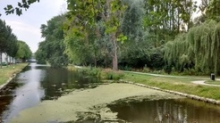

پیادهروی در دلفت-سیزده آگوست دوهزار و پانزده

سوال اساسی این است که اینجا کجاست؟ عکس را قطعن از روی پل گرفتهام. ولی چیزی که در دلفت زیاد است پل. اولین درخت سمت راست، همانی که شاخههای آویزان دارد شبیه بید مجنون است. شاید هم خودش باشد.
چند ساله بودم؟ یادم نیست. یادم است پشت موتور باباعلی نشسته بودم. یا شاید جلوی موتور؟ اگر جلو نشسته باشم (نشسته بوده باشم؛ از صیغههای منسوخ افعال فارسی) یعنی هنوز مدرسه نمیرفتم. پشت موتور مربوط است به دو دوره: صد دولوکس آبی یا یاماهای صد قرمز. هر دو درب و داغان. جایش را هم یادم است. بلوار. آن زمان تنها خیابان یکطرفه شهر. درخت با همین شاخههای آویزان، شبیه یک خانه با دیوارهای نازک سبز. باباعلی گفت به این میگویند بید مجنون. یادم است دلیلش را هم گفت. ارتباطی داشت به جنون و دیوانگی و همان عاشق معروف. دلیلش چه بود؟ موهای زیادی بلند؟ شلختگی؟ از درخت خوشم آمد. درخت بید زیاد داریم در ایران (درست میگویم؟). ولی آن بید مجنون خیلی چشمم را گرفت. وسط آن همه درخت معمولی حال و هوای خوبی داشت. اینجا بید مجنون خیلی معمولی است. کلن اینجا همهی آدمها خیلی معمولی هستند.